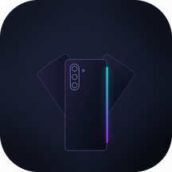

Built for the Solana Mobile Seeker
Seeker Wallet (working name)
The Seeker wallet that shows you what you sign.
Every signature is preceded by a receipt read off the real transaction bytes and simulated by the network. On top of that layer: an autonomous trading agent on a leash, MEV‑protected swaps, a bridge to 200 chains, NFC payments, and live data on what Seeker owners are buying.
09:41cHAH…VZjQ
Total balance
€ 0,00
+2,4 % today
SendReceiveSwapScan
ScoutBridgeAgentMore
Out−0,0377 SOL
In+3.204,92 ALL
ToJupiter Ultra · MEV
Risknew recipient
Hold to sign
What it runs on
Seed Vault, every signatureKeys live in the Seeker's secure element. The app never holds a key: a dApp, a script or a model proposes, the vault signs after your fingerprint, and only after the receipt.
Receipt engine with network simulationTransactions are decoded on the phone (transfers, tokens, swaps, delegations, lookup tables), simulated on mainnet, and re‑checked an instant before signing. If the outcome changed, it refuses.
Hardware‑attested receiptsEach receipt is signed with a P‑256 key in the Android Keystore (StrongBox when available). A payment proof fits in a QR; any phone verifies it offline against the key inside.
Mobile Wallet AdapterAny Solana dApp connects through MWA and gets the same receipt‑first flow, including bundles and sign‑in.
Jupiter UltraSwaps and the agent's trades go through Ultra: routing, slippage estimation and priority fees by Jupiter, MEV protection, gasless where eligible, landing by Jupiter's own infrastructure.
Autonomous agent with a collarA second on‑device account with an allowance. Per‑move and daily caps, a silent threshold, an allow‑list of programs, mandatory simulation, Rugcheck and Jupiter's shield on every candidate. Take‑profit on chain via Jupiter Trigger.
Bring your own modelAnthropic or any OpenAI‑compatible API (Gemini, Groq, OpenRouter, xAI) with your key, streaming, tool use. Your own rules in a Markdown file can only forbid, never widen.
RocketX bridgeSOL or USDC to Ethereum, Arbitrum, Base, BNB, Bitcoin, Tron and 200 more. Routes compared; the deposit goes out through the ordinary Send, receipt included.
NFC, three waysHost‑card emulation to get paid by touch, contacts exchanged by touch and signed by the phone, and NFC stickers written by the app for a counter or a tip jar, lockable against rewriting.
Solana Actions and BlinksAny Blink opens as a card with its buttons and parameters; the transaction it returns is simulated and signed like any other, with the Dialect registry consulted first.
Scout on Cloudflare WorkersA census of 120,000 Seeker phones; the 10,527 most active are watched every ten minutes by a free‑tier worker. Whale buys become signals for the agent.
DeFi read straight from the chainNative stake accounts, SKR staked with the Seeker Guardians (decoded from the program's accounts), Jupiter Lend deposits, with daily yield.
What you get
ReceiptSee before you signWhat leaves, what comes in, to whom, at what cost, with which risks. Hold to confirm, then the fingerprint.
AgentTrades alone, on a leashHunts every six minutes, sells at target or stop, sends gains home, closes and returns everything including rent. Watch it think, with a voice, on a screen that never sleeps.
ScoutWhat Seeker owners buyLive buys, whales and their holdings, what the active ones hold. Follow a wallet and the agent copies it through the same gates.
MarketCoinGecko and marketcapof, in oneRankings, followed coins with what you hold elsewhere, "what if it were as big as…" with a ×2 ×10 ×100 ladder, a bell at every 5%.
HealthYour wallet, checkedDelegations to revoke, rent to reclaim, junk to burn, address‑poisoning lookalikes caught in Send. A score, a widget, a floating bubble you shape yourself.
LinkMoney by link, to anyoneA throwaway wallet with the amount inside and a link. Whoever opens it, wallet or not, brings the money into theirs.
GuestHand the phone overLong‑press the balance, or cover the screen with a hand: amounts hidden, nothing that spends. Your fingerprint brings it back.
ReceiptsTax‑readyEvery signature recorded, CSV for Koinly and CoinTracker, PDF, realized P&L per token.
English by default, Italian when the phone is. Free. The app earns on the swap fee, nothing else.